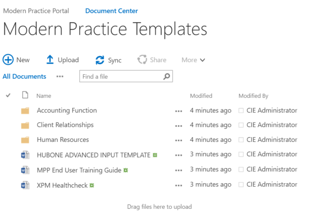

|
<< Click to Display Table of Contents >> Navigation: »No topics above this level« Setting up the OnePractice Portal |
The following procedure installs the OnePractice Portal and associated Software
Ref |
Instructions |
Screenshot |
1 |
Install the Connected Practice Installation Tool from the build folder |
|
2 |
Run the Connected Practice Installation Tool
Click here to download the installation Tool
Enter the following information
•Tenant Admin Url: e.g. https://ciecom586908-admin.sharepoint.com •Admin User: e.g. admin@ciecom586908.onmicrosoft.com •Password: e.g. pass@word1 •Log File Locaiton e.g. c:\logs •Service Location e.g. AU (means AU or rest of world) •Generate from Site Root - Ensure this is checked •Uncheck Skip Tenant and Portal Home Site Setup •When done click the -> Arrow |
|
3 |
As this version supports Xero Practice Manager, Click Fetch Client Key and Connect to your favorite Xero Practice Manager Instance.
You can use the HubOne Test Key if required
Click the Next Arrow to continue
|
|
4 |
Click Next to Continue |
|
5 |
The next stage will take a few minutes. Please wait for it to complete |
|
6 |
Next there are a number of tasks to perform
1.Click the link to ensure the App Catalog is Linked 2.Click the link to register Template Manager a.Enter the Client ID of a79cfe9c-b6ec-4ef3-b312-df5ac166c563 b.Enter the Client Secret of dglmNemjBL/zQq8169pWkzyE55ja3KoxrdDD9P13SAo= c.Enter the Title of OnePractice Template Manager d.Enter the App Domain of mpp4templateman.azurewebsites.net e.Enter the Redirect URI of https://mpp4templateman.azurewebsites.net/Pages/TemplateFast.aspx f.Click CREATE, then Click Ok 3.Click the link to Install Template Manager. You will be presented with a list of Apps. Chosoe OnePractice Template Manager and Click Trust it 4.When Complete, Click the NExt (->) Button
|
|
7 |
Wait until you see PORTAL CREATION COMPLETE. Once you see that, you can close the Provisioning Tool |
|
8 |
You now need to add templates to the template library.
Navigate to the new document center https://ciecom586908.sharepoint.com/documentcenter/SitePages/OnePracticeDocumentsHome.aspx
Click the Cog to go and go to site contents.
Choose Modern Practice Templates |
|
9 |
Upload all the files from https://onedrive.live.com/redir?resid=AC2C4E54F3F0F2FB!271122&authkey=!AO1z0npCbON5fhk&ithint=folder%2cdocx
|

|
10 |
To Install OnePractice Mail, Navigate to https://portal.office.com as an admin |
|
11 |
Go to Exchange -> Organization -> Add-Ins |
|
12 |
Click the + Button and choose From File. |
|
13 |
Upload the File here |
|
14 |
Click OnePracticeMail and Choose Edit |
|
15 |
Set the Tool to Mandatory, Always Enabled, Users can't disable this add-in |
|
16 |
*** PROCEDURE COMPLETE *** |